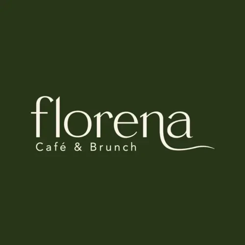
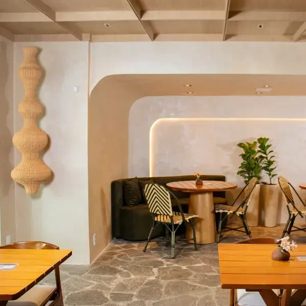
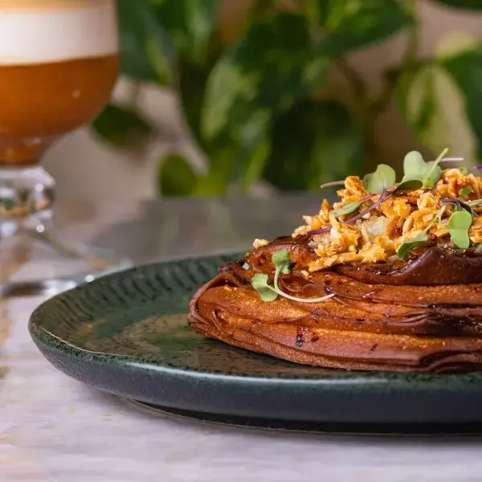
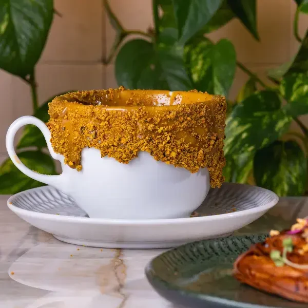
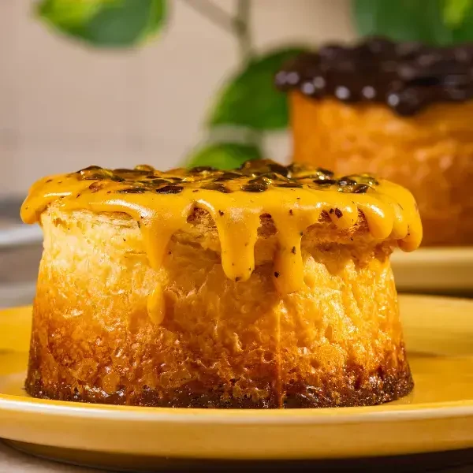
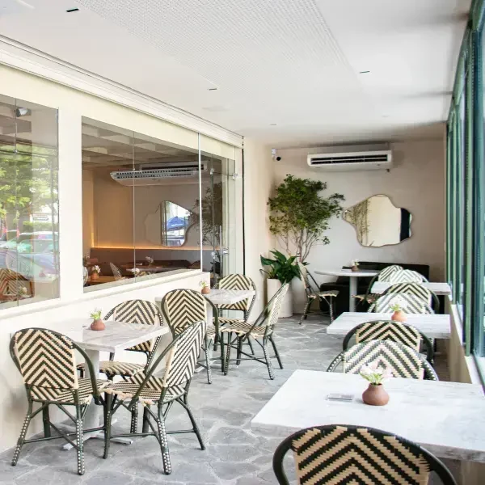

Salmão
Salmão curado na beterraba, sour cream, rúcula e gergelim.

Reservar uma mesaDos toasts à confeitaria, preparamos combinações para o seu brunch e para a pausa no café. Venha conhecer o Florena, na Rua Frei Mansueto.



Croissants, danishes e New York rolls dividem o forno e ganham recheios próprios. Entre nossas escolhas, há brie com geleia, queijo com melaço, salmão gravlax e chocolate belga.
Para uma refeição com sabor de casa, temos cuscuz nordestino com carne de sol, queijo coalho e ovo, além de tapiocas e bowls.
Do espresso ao filtrado V60, a bebida encontra diferentes preparos na nossa carta. Há cafés com leite, versões geladas e combinações de confeitaria.


Na nossa confeitaria, o café ganha companhia: bolos, bombons, tortas e sobremesas.
Mesas para o café, plantas e detalhes de cerâmica acompanham sua visita. Temos ambiente climatizado, Wi-Fi, estacionamento e acesso para cadeirantes. Seu pet é bem-vindo.

Para organizar uma mesa, fale conosco pelo canal de reservas.
Conversar sobre a reservaO menu digital reúne os pratos, as bebidas e os valores da casa. Se vier para uma ocasião especial, envie a data e a quantidade de pessoas no nosso canal de reservas.
Novidades e horários são publicados no Instagram.
Acompanhar @florenacafeSim. Nosso menu também inclui cuscuzes, tapiocas, bowls gelados, saladas e omeletes. Você encontra os ingredientes de cada preparação no menu digital.
Use o botão de reserva para conversar com a equipe pelo WhatsApp. Informe a data e a quantidade de pessoas para combinar a visita.
Sim, recebemos pets. Avise ao reservar para que possamos orientar sobre a acomodação.
O menu identifica ingredientes e alergênicos das receitas. Fale com nossa equipe antes do pedido para verificar opções e condições de preparo.